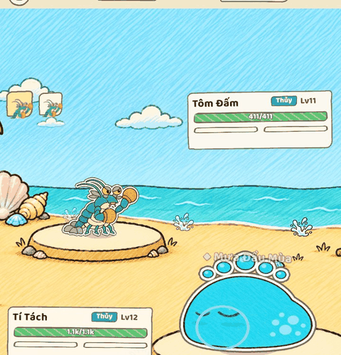
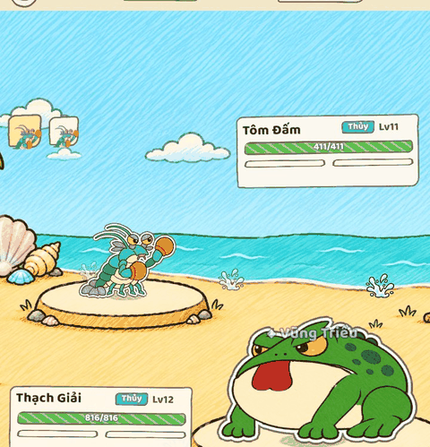
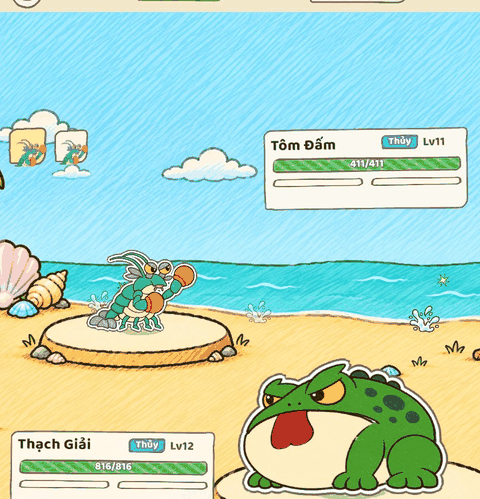
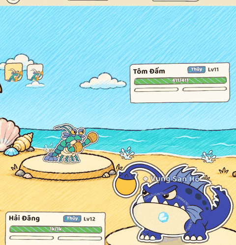
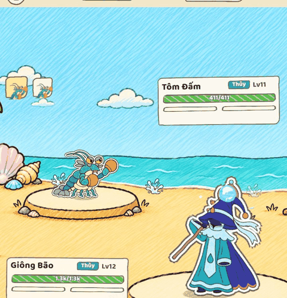
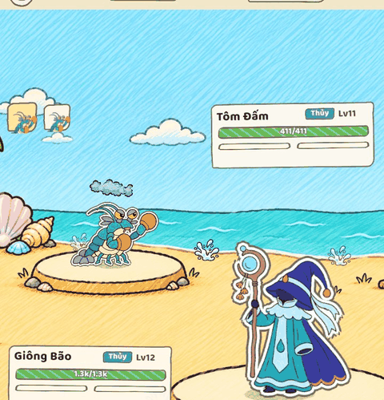
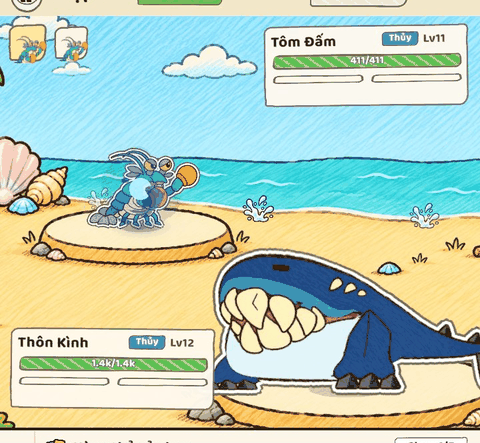
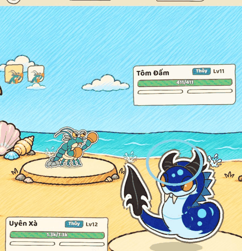
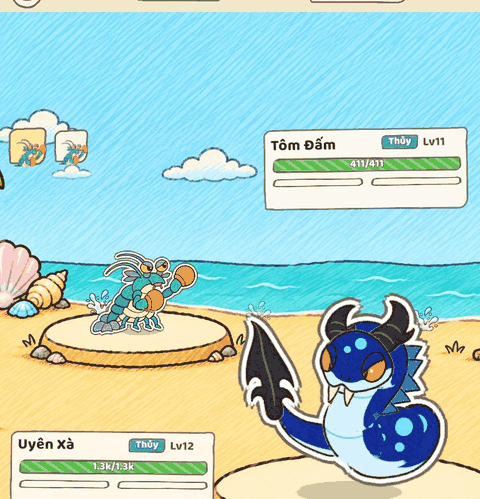
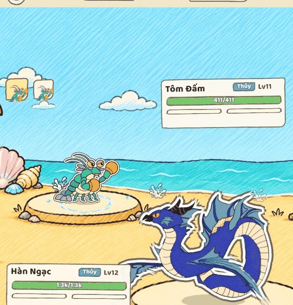

Dựng theo bộ nước gói mẫu (shader UIWaterFx, flipbook SrRubfish + NamuFX), mỗi chiêu bám động tác clip có sẵn của tướng. Chụp tour Unity, ~0,1 s một khung.
Sò Ngoạm, Bát Trảo giữ chiêu riêng. Mã: Assets/01 Script/Game/Battle/HatNuocChieu.cs.

Tí Tách · Chiêu mana Liên châu thủy đạnhá miệng bắn 5 viên đạn nước liên tiếp, viên cuối to toé lớn · 23 khung

Thạch Giải · Chiêu mana Bong bóng nảythổi 3 bong bóng bay vồng, nảy một lần trên đất rồi vỡ ở thân đối thủ · 23 khung

Thạch Giải · Chiêu cuối Cầu nhốtợ cầu nước bọc lấy đối thủ thành bong bóng trong suốt, rung hai nhịp rồi vỡ · 33 khung

Hải Đăng · Chiêu mana Bom nướcphụt cầu nặng bay vồng, vòng gợn báo chỗ rơi, nổ toé đất + cột nước · 23 khung

Giông Bão · Chiêu mana Cầu xoáycầu tụ theo đầu trượng, ba cầu nhỏ quay quanh, trúng: chớp, gai sắc, toé sao · 23 khung

Giông Bão · Chiêu cuối Mưa giôngmây giông tụ, mưa xiên, ba cột thác dội (cột giữa sau lưng đối thủ), sét · 33 khung

Thôn Kình · Chiêu cuối Cầu ma thủytriệu hồi cầu ma thủy xanh biển sẫm (prefab gốc của gói, tô dải + vân chì) ngay ở thân đối thủ: cuộn tụ, lõi sáng, dải nước bay vòng, nén rồi nổ · 35 khung

Uyên Xà · Chiêu mana Thủy xàrắn nước trườn uốn lượn từ hai sừng tới, hai hàm lưỡi liềm ngoạm · 24 khung

Uyên Xà · Chiêu cuối Chém nướcđuôi sừng quất: ba lưỡi chém nước cung lưỡi liềm + vệt sáng · 34 khung

Hàn Ngạc · Chiêu cuối Siêu bão xoáyphễu nước + vòng xoáy rộng ba tầng, mắt bão trên đỉnh, mảnh băng bạc bay vòng, gió mưa quất · 36 khung